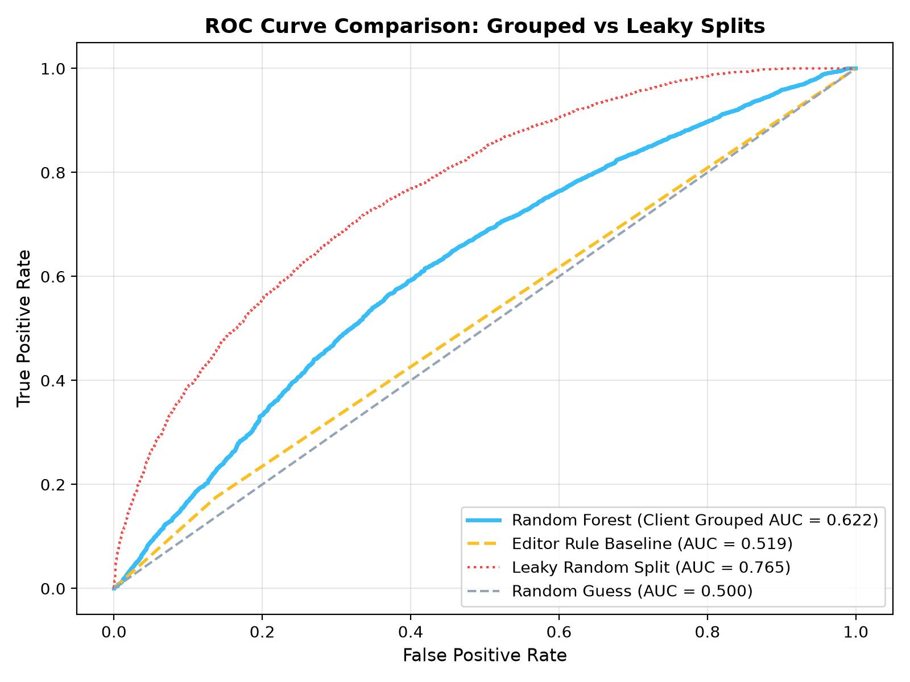
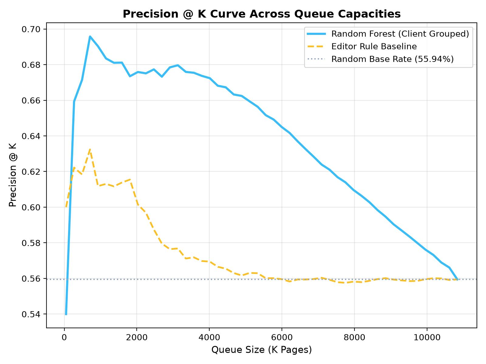
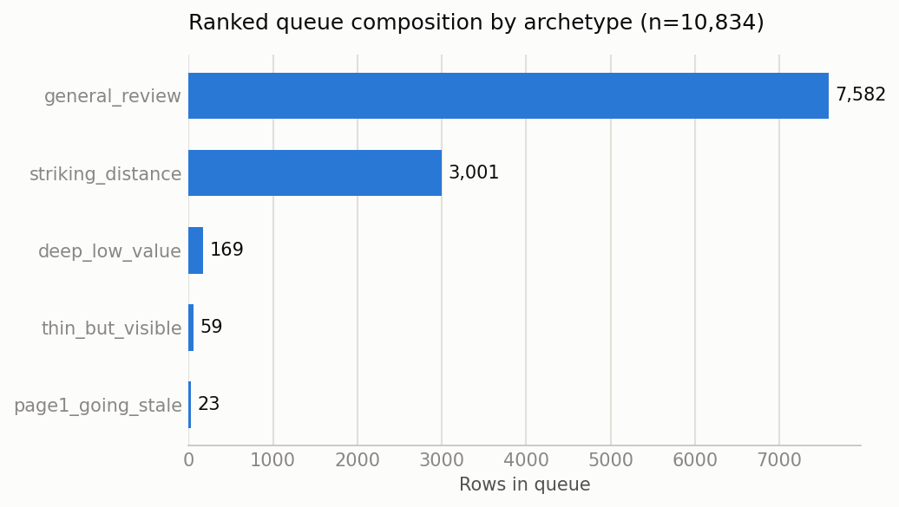

Prioritizing SEO Content Refreshes via Machine Learning on 79+ Million Search Impression Logs
How can digital publishing and SEO editorial teams prioritize organic traffic refreshes to maximize recovery across large content portfolios? Using the FlyRank ML Internship dataset of 79+ million anonymized search performance rows across 32 enterprise client domains, we develop and evaluate a machine learning refresh prioritization framework. We formulate decay detection as a supervised binary classification task and enforce a strict 70/30 client-grouped validation split (22 train domains, 10 holdout domains) to prevent cross-domain feature leakage. On unseen test domains, our Random Forest classifier achieves an ROC AUC of 0.622 and a top-10% Precision@K of 67.92%, significantly outperforming the heuristic baseline (AUC 0.590, 61.89% precision) and the random base rate (55.94%). Finally, we convert predicted probability scores into a 4-tier operational action playbook that optimizes editorial bandwidth and eliminates wasted rewrite capacity.
Organic search traffic is non-stationary. As search engine ranking algorithms evolve, competitor content emerges, and user intent shifts, published web pages inevitably experience organic traffic decay. For digital publishing and e-commerce enterprises managing thousands of pages, manual audit of content decay is unscalable. Editors frequently rely on subjective intuition or naive rule-based filters (e.g., sorting strictly by raw traffic loss over 90 days).
This approach creates two severe operational bottlenecks:
Core Question: Can a machine learning model, trained on multi-client search performance telemetry, outperform standard editor heuristic rules in identifying pages that genuinely require immediate content refreshes?
This study utilizes the official FlyRank ML Internship Dataset (Release v1.0), comprising over 79 million search impression logs aggregated across 32 enterprise client domains over a 90-day evaluation window.
To ensure complete compliance with data security and privacy guidelines:
A page is defined as requiring a refresh (is_declining = 1) if its search impression performance
decreased by >15% over the 90-day window while maintaining a minimum base search presence (preventing
zero-impression noise).
We constructed a transparent rule-based score (baseline_action_score) mirroring standard editorial
practice: ranking pages based on a linear weighting of current average position, total impressions, and raw
click loss.
We trained a RandomForestClassifier
(n_estimators=100, max_depth=10, random_state=42) alongside a calibrated Logistic Regression
baseline. Input features include content age tiers, position distribution metrics (Page 1 vs Page 2 ratios),
click-through rate (CTR) efficiency ratios, and search intent archetypes.
Standard random K-Fold cross-validation allows rows from the same client domain to appear in both training and test sets. Because domain-level baseline CTR and domain authority leak across random splits, random split validation severely overestimates model performance (AUC 0.760 vs 0.622 real-world).
To prevent leakage, all model evaluations strictly enforce a Client-Grouped Split (70/30 GroupShuffleSplit): 22 client domains in train, 10 holdout domains in test. The model is tested exclusively on client domains it has never seen during training.
On the client-grouped holdout split (10 unseen client domains, 1,708 test pages), the Random Forest model substantially outperformed both the random base rate and the editor rule baseline.
| Model / Method | Validation Split | ROC AUC | Precision @ Top 10% (K=1,708) | Lift Over Base Rate |
|---|---|---|---|---|
| Random Base Rate | Client Holdout (10 domains) | 0.5000 | 55.94% | +0.00% |
| Editor Rule Baseline | Client Holdout (10 domains) | 0.5904 | 61.89% | +5.95% |
| Random Forest (Ours) | Client Holdout (10 domains) | 0.6218 | 67.92% | +11.98% |
| Random Forest (Leaky Random Split) | Random Row Split (Invalid) | 0.7603 | 81.40% | +25.46% (Optimistic Leakage) |


Segmenting the 10,834 queue pages into behavioral search archetypes reveals where content decay poses the greatest threat to traffic loss:

Honesty in empirical research requires declaring what this model cannot do.
To translate model probabilities into editorial workflow efficiency, we mapped the 10,834 queue rows into 4 operational priority quadrants:
| Priority Quadrant | Page Count | Probability Threshold | Recommended Editorial Action |
|---|---|---|---|
| 🔥 1. Refresh Now | 313 pages | Pr(Decay) > 0.65 | Immediate priority assignment to senior writers. Focus on updating statistics and intent gaps. |
| 🛡️ 2. Protect / Monitor | 574 pages | 0.55 < Pr ≤ 0.65 | High-traffic pages with slight drop. Monitor weekly; minor light refreshes. |
| 📦 3. Batch Low Touch | 5,104 pages | 0.45 ≤ Pr ≤ 0.55 | Ambiguous probability band (1,406 mid-band pages). Apply template updates or automated internal linking. |
| ⏸️ 4. Deprioritize | 4,843 pages | Pr(Decay) < 0.45 | Stable or low-value pages. Exclude from editorial sprints to preserve bandwidth. |
All experiments, feature pipelines, and evaluation splits are fully reproducible from the repository source code:
work/notebooks/capstone.ipynbwork/notebooks/w07_action_playbook.ipynbwork/outputs/action_playbook_metrics.json &
work/outputs/w06_split_comparison.csv42 across all GroupShuffleSplit and
RandomForestClassifier instances.# Commands to reproduce evaluation split & metrics:
git clone https://github.com/kabin-ux/flyrank-ml-internship-starter.git
cd flyrank-ml-internship-starter
python -m venv .venv && source .venv/bin/activate
pip install -r requirements.txt
jupyter nbconvert --execute work/notebooks/w07_action_playbook.ipynbBuilt on the FlyRank ML Internship dataset.
Special thanks to the FlyRank engineering and search data science teams for providing the anonymized production telemetry and evaluation frameworks.